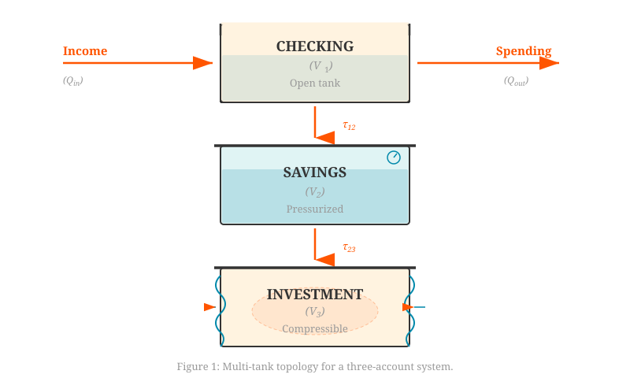
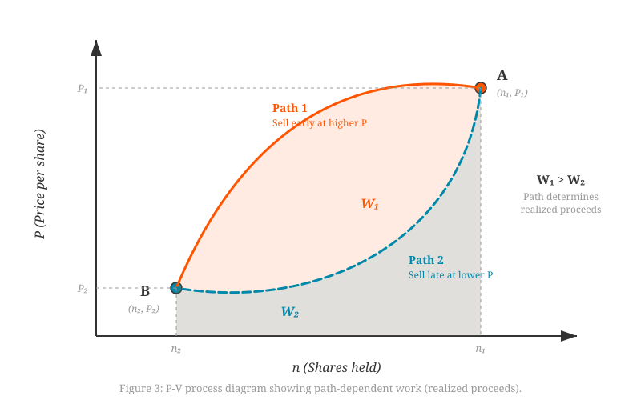
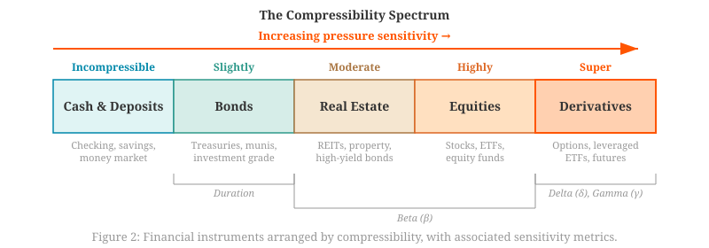
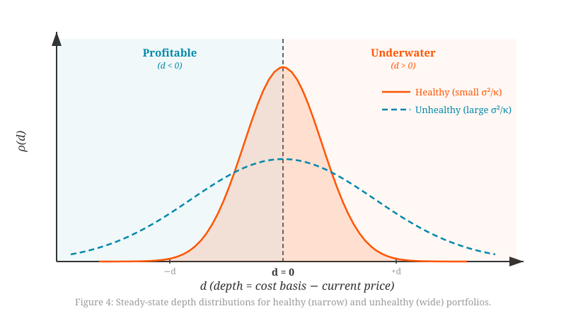

Thermofluidic Finance: A Physical Theory of Personal Financial Dynamics
Working Paper Draft v0.5
Abstract
The language of personal finance is saturated with fluid metaphors—cash flow, liquid assets, financial liquidity—yet these terms remain purely figurative. In this paper, a rigorous mathematical framework is developed in which personal finance operates as an actual dynamical system governed by conservation laws from fluid mechanics and energy relations from thermodynamics.
Cash accounts are modeled as interconnected reservoirs of incompressible fluid, where the fundamental balance equation \(dV/dt = Q_{in} - Q_{out}\) directly parallels the continuity equation for mass conservation. The multi-account system is expressed in state-space form \(\dot{\mathbf{x}} = \mathbf{A}\mathbf{x} + \mathbf{B}\mathbf{u}\), opening access to the full machinery of dynamical systems theory.
The central novelty lies in treating volatile investments as compressible media suspended within this financial fluid. Because investment value \(V = nP\) depends on both quantity held \(n\) and market price \(P\), it exhibits compressibility—its “volume” changes with external “pressure” even absent any flow. Applying the product rule yields an exact First Law of Thermodynamics: unrealized appreciation \(\delta Q = n\,dP\) enters as heat from the market environment, while realized gains \(\delta W = -P\,dn\) are extracted as thermodynamic work. This decomposition is assumption-free, requiring no equation of state.
A compressibility spectrum classifies financial instruments from incompressible (cash) through highly compressible (equities) to supercompressible (derivatives). At the position level, a lot-level buoyancy model characterizes each purchase lot by its “depth” \(d = \ln(P_{entry}/P)\), governed by an Ornstein-Uhlenbeck process whose analytic solutions yield underwater-time distributions, recovery statistics, and drawdown risk measures with direct applications to tax-loss harvesting and portfolio diagnostics.
I. Introduction
1.1 The Ubiquity of Flow Without the Physics
Open any personal finance textbook and a curious linguistic pattern emerges. Money flows into accounts. Assets are liquid or illiquid. Cash pools in savings. Investments float or sink. The entire vocabulary of personal finance is borrowed from fluid mechanics—yet when it comes to actually modeling personal finances, this rich metaphorical structure evaporates. Standard approaches treat accounts as static buckets with discrete additions and subtractions. Budgeting tools categorize and sum. Spreadsheets tabulate. The dynamic, flowing, interconnected nature implied by the language finds no mathematical expression.
This paper asks a simple question: What if the fluid metaphors were not merely poetic, but physical? What if personal finance genuinely operates as a dynamical system whose equations can be written down, whose stability can be analyzed, and whose behavior can be predicted using the same mathematical machinery that governs actual fluids and thermodynamic processes?
1.2 Origins: From Tank Problems to Financial Insight
The framework developed here emerged from the classic “tank draining” problems encountered in differential equations courses. The structure of interconnected reservoir problems—water flowing between tanks, governed by conservation laws and constrained by pipe capacities—turned out to be identical to the structure of a personal financial tracking system. Income enters like water from a faucet. Spending drains like an open valve. Transfers between accounts flow through regulated channels.
What elevates this from private analogy to publishable framework is the discovery that the mathematics actually works. The equations governing fluid flow in tanks are not merely similar to personal finance dynamics—they are the same equations, with dollars replacing gallons and accounts replacing reservoirs. Moreover, this structural identity extends beyond fluid mechanics: the distinction between cash and investments maps precisely onto the distinction between incompressible and compressible media, importing thermodynamic structure.
1.3 Related Work
The application of physical reasoning to economic systems has a substantial history, and the present work connects to several adjacent fields.
Hydraulic economic models. In 1949, the economist Bill Phillips constructed the MONIAC, a hydraulic machine that modeled the circular flow of the British national economy using colored water flowing through transparent pipes [1]. Tanks represented sectors (households, firms, government), flows represented income and expenditure, and adjustable valves served as policy instruments. MONIAC operated at the macroeconomic scale, modeled only incompressible flows, and had no thermodynamic structure. The present work operates at the household scale and introduces compressible investment accounts alongside incompressible cash flows.
Econophysics. The field of econophysics applies statistical physics to the collective behavior of financial markets [2, 3]. This tradition characterizes market-wide phenomena—return distributions, scaling laws, correlation structures—treating the market as an emergent system of many interacting agents. The present paper operates at a different scale: rather than characterizing what the market does, it models what happens to a household immersed in that market.
Statistical mechanics of money. A related tradition examines wealth distributions through agent-based models with conserved-money exchange [4, 15], modeling populations of agents and characterizing the equilibrium distributions that emerge. The present paper instead models a single household and tracks how value flows and transforms within its accounts. The two perspectives are complementary, analogous to the distinction between kinetic theory (ensemble behavior) and classical thermodynamics (one system’s energy balance).
Thermoeconomics and exergoeconomics. Several traditions apply thermodynamic concepts to economic systems at industrial and macroeconomic scales: entropy constraints on resource use [5], exergy-based cost accounting for thermal system optimization [6], formal analogies between thermodynamic and economic equilibria [16, 17], and thermodynamic identities for market-level aggregates [18]. These contributions generally operate at the level of national economies, industrial plants, or aggregate markets.
The present paper operates in the space between these traditions, applying fluid mechanics and thermodynamics to household-level financial dynamics—where conservation laws govern cash accounts and the First Law governs investment value changes.
1.4 Thesis and Contribution
A framework is proposed in which:
- Cash accounts behave as incompressible fluid in interconnected reservoirs. The fundamental equation governing account balances is the continuity equation for mass conservation. The multi-account system is expressible in state-space form, opening access to eigenvalue stability analysis, controllability, and optimal control.
- Volatile investments behave as compressible media. Investment value \(V = nP\) depends on both quantity held and market price, introducing compressibility. The product rule applied to \(V = nP\) yields an exact First Law of Thermodynamics: unrealized gains are heat absorbed (\(\delta Q = n\,dP\)), realized gains are work extracted (\(\delta W = -P\,dn\)). This decomposition is assumption-free—it requires no equation of state.
- A compressibility spectrum classifies financial instruments by their sensitivity to external market forcing, from incompressible cash through highly compressible equities to supercompressible derivatives.
- Lot-level buoyancy dynamics model each purchase lot’s “depth” relative to current price as an Ornstein-Uhlenbeck process, yielding analytic results for underwater-time distributions, recovery probabilities, and drawdown risk—with direct applications to tax-loss harvesting and portfolio health diagnostics.
1.5 Paper Roadmap
Section II develops the core framework for cash accounts as incompressible fluid, introducing the multi-tank topology and state-space formulation. Section III presents the thermodynamic structure of compressible investments, deriving the First Law decomposition and introducing the compressibility spectrum. Section IV develops lot-level buoyancy dynamics as a major extension connecting the framework to practical portfolio analytics. Section V discusses limitations, future directions, and related areas for further exploration. Appendix A provides complete mathematical derivations.
II. The Fluid Finance Framework
Having established the aims of this work, the foundation is now constructed: a rigorous model of cash accounts as reservoirs of incompressible fluid connected by regulated flows.
2.1 The Single-Account Conservation Law
Consider a single financial account—a checking account, say—with balance \(V(t)\) at time \(t\), measured in dollars. Money enters the account at rate \(Q_{in}(t)\) (dollars per unit time) and exits at rate \(Q_{out}(t)\). If it is assumed that money is neither created nor destroyed within the account—a reasonable assumption for a personal checking account, which does not print currency—then the rate of change of the balance must equal the net inflow:
This is the fundamental balance equation. It is mathematically identical to the continuity equation for an incompressible fluid in a tank, where \(V\) represents volume and \(Q\) represents volumetric flow rate.
Equation (1) is deceptively simple. It states that if earnings exceed spending, the balance increases; if spending exceeds earnings, it decreases. But embedding this truism in differential equation form opens the door to all the analytical machinery of dynamical systems: stability analysis, phase portraits, eigenvalue decomposition, and more.
For practical computation, discrete time is typically employed. If \(\Delta t\) is the time step (one month, say), then:
This is exactly the update rule used by every budget spreadsheet—revealed now as a finite-difference approximation to a conservation law.
2.2 The Incompressibility Assumption
Why is cash called “incompressible”? The term has a precise meaning in fluid mechanics: an incompressible fluid has constant density. One gallon of water remains one gallon regardless of pressure (to excellent approximation at everyday conditions).
Cash exhibits the analogous property: one dollar is one dollar, regardless of which account it occupies. Transfer $100 from checking to savings, and there is $100 less in checking and $100 more in savings. The total is conserved. The “density” of money—its value per unit—does not change under redistribution.
This may seem obvious, but it is precisely what fails for investments. Transfer $100 from checking to a stock brokerage, and a week later that position might be worth $110 or $90. The dollars have become compressible—their value depends on external conditions (market price), not just on quantity. This distinction is exploited in Section III.
For now, attention is restricted to cash accounts where incompressibility holds.
2.3 Multi-Tank Topology
Real personal finances involve multiple accounts. A minimal realistic model might include:
- Checking (\(V_1\)): Primary transaction account; income deposits here, spending withdraws from here
- Savings (\(V_2\)): Emergency fund or accumulation account; receives periodic transfers from checking
- Investment (\(V_3\)): Brokerage or retirement account; receives transfers from savings (treated as cash for now; Section III introduces compressibility)
These accounts form a network—a topology of reservoirs connected by flow channels. Figure 1 illustrates the structure.
{kind=link}

Figure 1: Multi-tank topology for a three-account system. Checking is open (directly interfaces with income and spending), savings is pressurized (sealed, earns interest), and investment is compressible (value fluctuates with market pressure).
The checking account is “open” in the sense that it interfaces directly with the external world (income, spending). Savings is “pressurized” in the sense that money there earns interest—a slight positive return that might be interpreted as pressure exceeding atmospheric. Investment is labeled “compressible” to signal its fundamentally different nature, developed fully in Section III.
2.4 The Transfer Matrix
To write the dynamics compactly, the state vector is introduced:
Internal transfers between accounts occur at rates denoted \(\tau_{ij}\) (dollars per month transferred from account \(i\) to account \(j\)). These form the transfer matrix \(\mathbf{A}\), constructed as follows. The entry \(A_{ij}\) (for \(i \neq j\)) represents money flowing into account \(i\) from account \(j\). The diagonal entry \(A_{ii}\) is the negative sum of outflows from account \(i\)—ensuring that each column sums to zero, which enforces conservation.
For the three-account system with transfers \(\tau_{12}\) (checking → savings) and \(\tau_{23}\) (savings → investment):
Notice that each column sums to zero: \(-\tau_{12} + \tau_{12} + 0 = 0\), and so on. This is the mathematical expression of conservation—internal transfers redistribute money but do not create or destroy it.
A note on linearity: The transfer rates \(\tau_{ij}\) are treated here as constants, yielding a linear model. Real household transfers are typically nonlinear—people don’t transfer a fixed fraction of checking to savings every month but rather make threshold-based, irregular decisions. The linear, constant-coefficient assumption is a simplification that preserves analytical tractability while capturing the essential flow structure. Extensions to nonlinear transfer rules (e.g., threshold-triggered, balance-dependent) are straightforward but beyond the present scope.
2.5 External Flows and the State Equation
External flows—income and spending—enter through the input vector:
where \(I(t)\) is total income and \(S(t)\) is total spending at time \(t\). The input matrix \(\mathbf{B}\) routes these to the appropriate accounts. If all income deposits to checking and all spending withdraws from checking:
Combining internal dynamics (Eq. 4) and external inputs (Eq. 5–6), the complete system dynamics are:
This is the standard linear time-invariant (LTI) state-space form familiar from control theory and dynamical systems. It has been derived here from conservation principles applied to a financial account network.
Equation (7) is powerful not because it is surprising—it is, after all, just bookkeeping in matrix form—but because it is an enabling result. Once the financial system is expressed in state-space form, the entire toolkit of dynamical systems theory becomes available:
- Stability analysis via the eigenvalues of \(\mathbf{A}\)
- Controllability and observability analysis
- Computation of steady-state balances for constant income/spending
- Optimal control (e.g., Linear Quadratic Regulators) for spending policy design
- State estimation (e.g., Kalman filtering) for noisy balance observations
- Simulation of trajectories under various scenarios
These applications are explored in Section V. First, the elephant in the room must be addressed: investments don’t actually behave like incompressible fluid.
2.6 The Limits of Incompressibility
The framework developed so far works beautifully for cash accounts. But apply it to a stock portfolio or cryptocurrency holding, and it immediately fails. Here’s why.
Suppose $1,000 is transferred from savings to a brokerage and stock is purchased. In the incompressible model, \(V_3\) increases by $1,000 and stays there (absent further transfers). But a month later, the stock might be worth $1,100 or $900, depending on market movements. The “volume” of the investment account—measured in dollars—has changed without any flow through the pipes.
This is fundamentally different from cash behavior. It’s as if the water in a tank could spontaneously expand or contract. In fluid mechanics, that’s called compressibility—and it brings thermodynamic structure with it.
The next section develops this insight into the central contribution of this paper: the thermodynamic theory of compressible investments.
III. Thermodynamics of Compressible Investments
Having established that cash accounts behave as incompressible fluid governed by conservation laws, the question arises: what about investments? Stock portfolios, cryptocurrency holdings, and other market-traded assets do not obey the incompressibility assumption. Their dollar value fluctuates with market price, even when no transactions occur.
The resolution is to model investments as compressible media—substances whose “volume” (dollar value) depends on external “pressure” (market price). This seemingly fanciful analogy turns out to have rigorous mathematical content, including a direct and exact application of the First Law of Thermodynamics.
3.1 The Compressibility of Investment Value
Consider a brokerage account holding \(n\) shares of some stock, where each share has market price \(P(t)\). The dollar value of the position is:
During a holding period (no buying or selling), \(n\) remains constant—the same number of shares is still owned. But \(P\) fluctuates according to market dynamics beyond the investor’s control. The account’s dollar value therefore changes even without any “flow” in or out.
Compare this to cash. One dollar in a checking account remains one dollar tomorrow. But one share of stock might be worth $50 today and $55 tomorrow. The investment’s value is compressible—its effective volume depends on external pressure (market conditions).
This observation motivates the following mapping:
| Fluid/Thermodynamic | Financial | Interpretation |
|---|---|---|
| Compressible medium | Investment position | Asset holding |
| Volume \(V\) | Dollar value | Market value of position |
| Quantity \(n\) | Shares/coins held | Conserved during holding |
| Pressure \(P\) | Price per share | External market forcing |
| Internal energy \(U\) | Market value \(nP\) | Total stored value |
3.2 The First Law for Investment Accounts
The total value of an investment position is \(U = nP\). Its total differential is obtained by the product rule:
This is pure calculus—no assumptions, no approximations, no equation of state. But the two terms on the right have profoundly different financial meanings:
The first term, \(n\,dP\): This captures value change from price movement alone—no transactions involved. The investor holds a fixed number of shares while the market moves. This is heat: energy entering the system from the external environment (the market) without mechanical action by the investor. Just as a gas absorbs heat from its surroundings without the piston moving, an investment absorbs or releases value from price changes without the investor trading.
The second term, \(P\,dn\): This captures value change from transactions—buying or selling shares at price \(P\). When shares are sold (\(dn < 0\)), value is extracted from the investment and converted into liquid cash. This is work: energy transferred through deliberate, organized mechanical action. Just as a gas does work by expanding against a piston, an investor does “work” by selling shares against the market price.
Identifying \(\delta Q = n\,dP\) and \(\delta W = -P\,dn\) (the sign convention ensuring work extracted is positive), the First Law of Thermodynamics is recovered exactly:
This decomposition is the paper’s central result. It is:
- Exact: No approximations or linearizations. The product rule is an identity.
- Assumption-free: No equation of state (such as PV = nRT) is needed. No model for price dynamics is assumed.
- Unique: Given the natural identification of “what changes because the market moved” versus “what changes because you traded,” the decomposition into heat and work is the only one consistent with the First Law.
- Illuminating: It explains why unrealized gains feel different from realized gains. They are different modes of energy transfer. Heat (unrealized gains) is volatile, reversible, subject to the whims of the environment. Work (realized gains) is extracted, locked in, converted to the incompressible safety of liquid cash.
3.3 Realized Gains as Thermodynamic Work
If realized gains are thermodynamic work, the work integral applies. For a general selling process in which price varies:
For isobaric selling (constant price—the investor sells gradually in a stable market):
This is exactly the form of work done by isobaric expansion of a gas. The financial interpretation is transparent: selling \(\Delta n\) shares at price \(P\) yields \(P \cdot \Delta n\) dollars of realized proceeds.
For variable-price selling (the investor sells during a period of price movement), the integral form (Eq. 13) is required. The path dependence of this integral—the fact that the total work extracted depends on the sequence of prices at which shares are sold—is the financial analogue of path dependence in thermodynamic work. Just as a gas can do different amounts of work along different thermodynamic paths between the same initial and final states, an investor can realize different total proceeds depending on the timing and sequence of sales.
{kind=link}

Figure 3: P-V process diagram illustrating path-dependent realized proceeds. Two different selling paths between the same initial state A and final state B yield different total work (shaded areas). Path 1 (selling early at higher prices) extracts more proceeds than Path 2 (selling late at lower prices).
3.4 Unrealized Gains as Stored Energy
If realized gains are extracted work, unrealized gains are stored energy—internal energy available for future work extraction but not yet converted. The unrealized gain on a position purchased at price \(P_{purchase}\) and currently valued at \(P_{current}\) is:
This is potential energy stored in the compressible medium—available to be extracted as work (realized gains) if and when a sale occurs. “Paper profits” are precisely this: energy in storage, not yet converted to usable form.
The gas/liquid visualization makes this concrete. Imagine a financial system as a fluid-filled container (total net worth). Most of the fluid is incompressible liquid—checking and savings accounts, cash holdings. Suspended within this liquid are one or more compressible regions: stock portfolios, Bitcoin holdings, retirement funds. Each compressible region has a well-defined volume (dollar value) that can expand or contract with market pressure.
When a compressible region expands (prices rise), it displaces liquid—net worth on paper increases, but liquid net worth stays the same until a sale occurs. Selling converts compressed value back to liquid (realized cash). The size of the compressible region depends on both how much it contains (\(n\) shares) and the external pressure (\(P\) market price).
This picture clarifies the distinction between realized and unrealized wealth. A large compressible region makes one “wealthy on paper,” but that wealth is gaseous—volatile, subject to market conditions. Only by extracting work (selling) is it converted to the incompressible liquid of actual cash.
3.5 The Compressibility Spectrum
The incompressible/compressible distinction is not binary but a spectrum. Different financial instruments exhibit different degrees of compressibility—different sensitivities to external market forcing. This observation yields a natural taxonomy:
| Category | Instruments | Compressibility | Character |
|---|---|---|---|
| Incompressible | Cash, checking, physical currency | Zero | $1 = $1 always |
| Nearly incompressible | Savings accounts, CDs, money market | Very low | Tiny interest-rate sensitivity |
| Moderately compressible | Bonds, bond funds | Moderate | Price varies with interest rates; duration measures sensitivity |
| Highly compressible | Equities, equity funds, real estate | High | Price varies with market conditions |
| Supercompressible | Options, leveraged ETFs, derivatives | Extreme | Value can change by orders of magnitude; leverage amplifies pressure sensitivity |
{kind=link}

Figure 2: The compressibility spectrum. Financial instruments arranged from incompressible (cash) to supercompressible (derivatives), with established sensitivity metrics (duration, beta, delta/gamma) mapped to their corresponding regions.
This spectrum has practical diagnostic value. A portfolio’s overall “compressibility”—the weighted average across its constituent instruments—determines its sensitivity to market movements. A portfolio dominated by highly compressible assets is thermodynamically volatile: its internal energy fluctuates wildly with external pressure. A portfolio weighted toward incompressible assets is thermodynamically stable: its value is largely insensitive to market conditions.
The spectrum also connects to existing financial metrics. Bond duration is a compressibility measure: it quantifies how much a bond’s price changes per unit change in yield (external pressure). Equity beta measures price sensitivity to market-wide movements. Options delta and gamma quantify sensitivity to underlying price changes. These established metrics are revealed, through the thermofluidic lens, as different measurements of the same underlying property: compressibility.
3.6 The Compressible Medium in Context
The visualization from Section 3.4 can now be enriched with the compressibility spectrum. A household’s financial system is a container holding a mixture of fluids with varying compressibility:
- The bottom layer—dense, stable, incompressible—is cash. It doesn’t move unless deliberately pumped (transferred).
- Above it, a slightly compressible layer: savings and bonds. Small pressure fluctuations cause small volume changes.
- Near the top, highly compressible regions: equities and speculative positions. Market pressure changes cause large volume swings.
- If derivatives are present, supercompressible pockets exist that can expand or collapse explosively.
The total volume of the container (net worth) is the sum of all layers. But the stability of that total depends critically on the compressibility distribution. A container mostly filled with incompressible fluid is robust; one dominated by compressible gas is fragile.
This picture immediately explains several well-known phenomena in intuitive physical terms: flights to liquidity during crises (gas condenses to liquid under adverse pressure), the appeal of diversification (mixing compressibilities dampens overall volatility), and the danger of leverage (supercompressible positions amplify every pressure fluctuation).
3.7 On Equations of State
The framework developed so far—the First Law decomposition, the compressibility spectrum, the gas/liquid visualization—does not depend on any specific equation of state relating pressure, volume, quantity, and temperature. The results of Sections 3.2–3.6 hold for any compressible investment, regardless of its price dynamics.
This is deliberate. The ideal gas law \(PV = nRT\) is one candidate equation of state for investments, and it yields an intriguing consistency requirement: substituting \(V = nP\) into \(PV = nRT\) produces \(P^2 = RT\), predicting that market “temperature” (a volatility proxy) should scale with the square of price. This prediction, its empirical status across asset classes, and the efficiency bounds that different equations of state imply, are the subject of a separate investigation. The present paper establishes the assumption-free foundation on which such explorations can be built.
3.8 Summary of the Thermodynamic Framework
The following has been established:
- Investment value \(V = nP\) exhibits compressibility (value changes with price, not just quantity)
- The product rule yields an exact First Law: \(dU = n\,dP + P\,dn\)
- Unrealized gains are heat absorbed: \(\delta Q = n\,dP\)
- Realized gains are work extracted: \(\delta W = -P\,dn\)
- The compressibility spectrum classifies instruments by pressure sensitivity
- The gas/liquid visualization illuminates the distinction between paper wealth and liquid wealth
The next section extends this framework from the macro level (whole accounts) to the micro level (individual purchase lots), connecting the thermofluidic model to practical portfolio analytics.
IV. Lot-Level Buoyancy Dynamics
The framework developed in Sections II and III operates at the account level: each investment account is a single compressible region characterized by total shares held \(n\) and current price \(P\). But a real portfolio consists of multiple purchase lots—shares acquired at different times and prices. Each lot has its own relationship to the current market price, its own unrealized gain or loss, and its own history.
This section develops the internal structure of the compressible investment region, modeling each purchase lot as a sub-element with its own “depth” in the financial fluid. The resulting model connects the thermofluidic framework to practical portfolio analytics: underwater-time distributions, recovery statistics, drawdown risk measures, and tax-loss harvesting optimization.
4.1 From Monolithic Accounts to Internal Structure
Consider a brokerage account that holds three lots of the same stock, purchased at different times:
- Lot A: 10 shares bought at $40 (currently profitable)
- Lot B: 15 shares bought at $55 (currently near break-even)
- Lot C: 5 shares bought at $70 (currently underwater)
If the current price is $52, the account-level view shows: 30 shares, market value $1,560, cost basis $1,600, unrealized loss of $40. This aggregate view obscures important structure. Lot A has a $120 unrealized gain. Lot C has a $90 unrealized loss. These have different tax implications, different recovery prospects, and different optimal holding strategies.
The thermofluidic framework extends naturally to this level: each lot is a sub-element within the compressible region, and its relationship to the current price determines its “buoyancy”—whether it floats (profitable) or sinks (underwater).
4.2 The Depth Variable
Define the depth of a purchase lot relative to the current market price:
where \(P_{entry}\) is the lot’s purchase price and \(P(t)\) is the current market price. The logarithmic form is chosen for mathematical convenience and because log-returns are the natural scale for price dynamics.
The depth variable partitions lots into three regimes:
- \(d > 0\): Underwater (loss). The lot was purchased above the current price. It has negative buoyancy—it “sinks” in the financial fluid, representing stored potential energy that may or may not be recoverable.
- \(d = 0\): Break-even. The current price equals the entry price. The lot is at neutral buoyancy.
- \(d < 0\): Profitable. The lot was purchased below the current price. It has positive buoyancy—it “floats,” representing extractable work (realizable gains).
The portfolio is thus characterized not by a single profit/loss number but by a distribution of depths—a richer representation that captures the heterogeneity of the investor’s positions.
4.3 The Ornstein-Uhlenbeck Model for Lot Dynamics
How does the depth of a lot evolve over time? Under geometric Brownian motion (GBM)—the standard model for price dynamics—the log-price \(\ln P(t)\) follows a random walk with drift:
where \(\mu\) is the expected return (drift), \(\sigma\) is volatility, and \(W_t\) is a standard Wiener process.
Since \(d(t) = \ln P_{entry} - \ln P(t)\), and \(P_{entry}\) is fixed for a given lot, the depth evolves as:
Defining \(k = \mu - \sigma^2/2\) (the drift-adjusted rate) and absorbing the sign into the noise term, this becomes:
For a market with positive expected returns (\(\mu > \sigma^2/2\), i.e., \(k > 0\)), the depth has a negative drift: underwater positions tend to decrease in depth over time (recover toward break-even), and profitable positions tend to increase in depth (become more profitable). This is the financial expression of positive market drift.
When mean-reversion effects are included—either from market microstructure or from the empirically observed tendency of extreme valuations to normalize—the depth dynamics take the form of an Ornstein-Uhlenbeck (OU) process:
where \(\kappa > 0\) is the mean-reversion rate. The OU process is one of the most thoroughly studied stochastic processes in physics and mathematics, with analytic solutions for virtually all quantities of interest.
4.4 Underwater-Time Distributions
A natural question for any underwater lot: how long until it recovers? In the OU framework, this is a first-passage-time problem: starting from depth \(d_0 > 0\), what is the distribution of times \(\tau\) until the process first hits \(d = 0\)?
For the OU process, the expected recovery time from depth \(d_0\) is:
For small depths (\(d_0 \ll \sigma^2 / \kappa\)), recovery time scales linearly with depth. For large depths, recovery time grows exponentially—deeply underwater positions face dramatically longer expected recovery periods. This exponential scaling formalizes the intuition that a 5% loss is a minor setback while a 50% loss may take years to recover from.
The probability of recovery within time horizon \(T\) can also be computed from the OU first-passage distribution, giving investors a principled answer to: “What is the probability that this 20%-underwater position recovers within one year?”
4.5 Tax-Loss Harvesting via Buoyancy Ranking
Tax-loss harvesting—selling underwater lots to realize losses for tax purposes—is a standard strategy in portfolio management. The depth model provides a principled framework for ranking lots:
Immediate tax benefit: A lot at depth \(d\) has unrealized loss proportional to \(1 - e^{-d} \approx d\) (for small \(d\)). Deeper lots offer larger tax benefits per share.
Expected future recovery: The OU model gives the expected future value of holding a lot at depth \(d\). For a lot currently underwater by amount \(d_0\), the expected depth at time \(t\) is:
The lot’s expected depth decays exponentially toward zero (break-even), with time constant \(1/\kappa\).
The optimization tradeoff: Selling a deeply underwater lot realizes a large loss now but sacrifices the lot’s future recovery potential. Selling a shallowly underwater lot realizes a small loss but sacrifices less recovery potential. The optimal harvesting strategy maximizes the net present value of tax savings minus forgone recovery:
where \(\tau_{tax}\) is the applicable tax rate and \(T\) is the investor’s time horizon. Lots are harvested in order of decreasing NPV—a principled ranking that balances present tax benefit against future opportunity cost.
4.6 Drawdown Analysis and Maximum Depth
The maximum depth across all lots in a portfolio at time \(t\) is:
This is directly related to maximum drawdown—a key risk metric in portfolio management that measures the largest peak-to-trough decline. Within the OU framework, the distribution of maximum drawdown can be characterized analytically.
For a single lot held over time horizon \(T\), the expected maximum depth reached is:
This grows as \(\sqrt{\ln T}\)—slowly, but unboundedly. The practical implication: over long holding periods, even in a trending market, there will be episodes of significant underwater depth. Risk management requires quantifying these excursions, and the OU model provides the distributional toolkit to do so.
For a portfolio of \(N\) lots, the maximum depth is amplified:
Larger portfolios (more lots) face deeper worst-case drawdowns, with the penalty scaling as \(\sqrt{\ln N}\)—a manageable growth rate that quantifies the diversification-versus-drawdown tradeoff.
4.7 The Depth Distribution of a Portfolio
Over time, as lots are acquired at different prices and the market evolves, the portfolio develops a depth distribution \(\rho(d, t)\)—a density function describing how the portfolio’s lots are distributed across depths. This distribution evolves according to the Fokker-Planck equation associated with the OU process:
At steady state—reached after a long holding period with continuous lot acquisition—the depth distribution converges to a Gaussian:
centered at \(d = 0\) (break-even) with variance \(\sigma^2 / (2\kappa)\).
This steady-state distribution provides a natural portfolio health metric:
- A narrow depth distribution (small \(\sigma^2/\kappa\)) indicates a portfolio with well-timed entries—lots clustered near break-even or in profit.
- A wide depth distribution (large \(\sigma^2/\kappa\)) indicates a portfolio with poorly timed entries or high market volatility—lots spread across a wide range of depths, including some deeply underwater.
- A depth distribution with a heavy right tail (many deeply underwater lots) signals a “sick” portfolio—one carrying significant unrealized losses with long expected recovery times.
- An asymmetric distribution skewed toward negative \(d\) (profitable) indicates a well-managed portfolio with favorable entry timing.
{kind=link}

Figure 4: Steady-state depth distributions. A healthy portfolio (narrow, solid orange) clusters lots near break-even; an unhealthy portfolio (wide, dashed cyan) spreads lots across a broad range of depths, including deeply underwater positions.
4.8 Connection to the Thermofluidic Framework
The lot-level model connects back to the macroscopic framework of Sections II and III:
- Individual lots are sub-elements within the compressible investment region
- The aggregate investment value \(V = \sum_i n_i P(t) = P(t) \sum_i n_i\) is the total volume of the compressible region
- The depth distribution \(\rho(d)\) characterizes the internal structure of the compressible region
- Heat absorption (\(\delta Q = n\,dP\)) from Section III distributes across all lots simultaneously—all lots at the same price move together
- Work extraction (\(\delta W = -P\,dn\)) is lot-specific—the investor chooses which lots to sell, and the choice determines the tax consequences and the reshaping of the depth distribution
This provides a unified physical language across three scales:
- Macro (Section II): Cash flows between accounts as incompressible fluid; investments are compressible regions in the financial container
- Meso (Section III): Each investment account has a thermodynamic structure; heat and work flow according to the First Law
- Micro (Section IV): Each purchase lot within an investment has a depth, a buoyancy, and a stochastic trajectory governed by the OU process
The fluid analogy extends naturally from system to account to position, offering a coherent physical framework across multiple scales of financial analysis.
V. Discussion and Future Directions
5.1 Summary of Contributions
A framework has been developed—termed thermofluidic finance—in which personal finance operates as a genuine dynamical system. Cash accounts behave as interconnected reservoirs of incompressible fluid governed by conservation laws. Investment accounts behave as compressible media subject to thermodynamic principles. The First Law of Thermodynamics applies exactly: unrealized gains are heat absorbed, realized gains are work extracted.
The framework’s three-pillar structure yields results at distinct levels of abstraction:
- The state-space formulation (Section II) is an enabling infrastructure—not new mathematics, but a new application of existing mathematics that opens access to the full dynamical systems toolkit.
- The First Law decomposition (Section III) is the core theoretical contribution—an exact, assumption-free partition of investment value changes into heat and work, illuminating the fundamental distinction between realized and unrealized gains.
- The lot-level buoyancy model (Section IV) is the primary applied contribution—a stochastic framework yielding analytic results for recovery times, drawdown risk, and optimal tax-loss harvesting.
5.2 Limitations
Several limitations deserve explicit acknowledgment:
Behavioral factors: The model treats financial flows as deterministic (cash) or stochastically driven by market dynamics (investments) but does not capture the full complexity of human psychology. Panic selling, overconfidence, loss aversion, and other behavioral biases affect the timing and magnitude of flows in ways not modeled here.
Tax, inflation, and debt: Taxes have been ignored entirely. In reality, the work extracted from investments (realized gains) is subject to capital gains tax, reducing the net work available. A more complete model would include tax drag as thermodynamic friction or dissipation. Inflation erodes the value of incompressible cash over time—a slow “evaporation” not captured here. Debt (negative balances) introduces additional structure.
Transfer matrix linearity: As noted in Section 2.4, real household transfers are nonlinear threshold-based decisions, not constant-rate flows. The linear model captures the essential structure but not the full behavioral complexity.
Price dynamics: The OU model for lot-level dynamics assumes GBM-like price behavior (log-normal returns). For assets with fat-tailed distributions (cryptocurrency, small-cap equities), the OU framework provides a reasonable first approximation but may underestimate extreme-depth excursions.
Validation: The framework has been validated for internal consistency (dual-method computation yields zero deviation across simulated trajectories). Empirical validation against real household financial data—for example, from the Federal Reserve’s Survey of Consumer Finances—would strengthen the framework’s practical claims but is beyond the present scope.
5.3 Signal Dynamics: A Brief Note
The time derivatives of financial position provide natural diagnostic tools within the thermofluidic framework. The first derivative (financial velocity, \(v = dV_{total}/dt = I - S\)) is simply the net savings rate. The second derivative (financial acceleration, \(a = dv/dt\)) reveals whether the savings rate is improving or deteriorating. These pair to define a phase space with four quadrants:
| Quadrant | Velocity | Acceleration | Interpretation |
|---|---|---|---|
| I | \(v > 0\) | \(a > 0\) | Accelerating growth |
| II | \(v < 0\) | \(a > 0\) | Decelerating loss (recovery) |
| III | \(v < 0\) | \(a < 0\) | Accelerating loss (crisis) |
| IV | \(v > 0\) | \(a < 0\) | Decelerating growth |
Quadrant III—negative velocity with negative acceleration—signals financial crisis: money is being lost at an increasing rate. This diagnostic framework, and its connection to PID control theory (where financial decision-making implicitly implements proportional-integral-derivative feedback), merits full development in a companion paper.
5.4 Equations of State and Efficiency Bounds
The thermofluidic framework invites deeper thermodynamic exploration. An equation of state \(f(P, V, n, T) = 0\) for investments would enable analysis of specific thermodynamic processes—isothermal selling (gradual liquidation in a stable market) versus adiabatic selling (rapid liquidation during a crash, suffering price impact). Different equations of state yield different predictions for the relationship between market volatility and price level.
Perhaps most intriguingly, a thermodynamic efficiency bound analogous to the Carnot limit may constrain investment returns: no strategy, however clever, could capture more than a certain fraction of total market appreciation as realized profit when operating between given price bounds. The derivation and empirical testing of such bounds—and the resolution of whether the bound should involve prices or temperatures—is the subject of ongoing investigation.
5.5 Future Directions
Several extensions merit further development:
Multi-asset portfolios: The present framework treats each investment position independently. A portfolio of correlated assets introduces coupled dynamics—multiple compressible regions that expand and contract together, with the correlation structure determining the collective behavior.
Optimal control: Given the state-space formulation (Eq. 7), optimal control theory (LQR, Model Predictive Control) can derive optimal spending and transfer policies to achieve financial goals while minimizing risk.
Network effects: Households interact—borrowing from family, splitting bills, inheriting. Extending the framework to networks of financial agents would capture these interdependencies.
Statistical mechanics: Instead of tracking one household, a population of households could be modeled as a thermodynamic ensemble. The “temperature” of this ensemble would characterize the spread of financial outcomes across the population, potentially connecting to observed wealth distributions.
The quantum mechanical extension is left as an exercise for the particularly ambitious reader. It is suspected that this involves superposition of buy and sell orders, but no claims are made.
5.6 Conclusion
The fluid metaphors pervading financial language are not accidental. Money really does flow. Investments really are volatile—in the precise, thermodynamic sense of being compressible media whose internal energy fluctuates with external pressure. The physics of fluids and thermodynamics provides a rigorous mathematical language for what financial intuition has always sensed.
By taking the metaphors seriously—and doing the mathematics—a framework has been arrived at that is both conceptually illuminating and practically useful. The First Law decomposition reveals the deep structure of realized versus unrealized gains. The compressibility spectrum provides a physical taxonomy of financial instruments. The lot-level buoyancy model connects thermodynamic principles to the concrete decisions investors face: which lots to harvest, how long to wait for recovery, how to measure portfolio risk.
The framework is not a forecasting tool—it does not predict where prices will go. It is a structural tool: it describes how financial value is stored, transformed, and extracted, using the same mathematical language that describes these processes in physical systems. That the language fits so precisely suggests that the structural similarities between financial and physical systems run deeper than metaphor.
Acknowledgments
This framework originated from the simple observation that interconnected tank-draining problems in differential equations—reservoirs of fluid connected by regulated flows, governed by conservation laws—are structurally identical to a system of personal financial accounts. The leap from that observation to a full thermofluidic theory was developed in collaboration with Anthropic’s Claude (Opus 4.5 and 4.6), whose contributions to the mathematical formalization, critical review, and iterative refinement of the framework were substantial.
References
- Phillips, A. W. (1950). “Mechanical Models in Economic Dynamics.” Economica (New Series), 17(67), 283–305.
- Mantegna, R. N., and Stanley, H. E. (2000). An Introduction to Econophysics: Correlations and Complexity in Finance. Cambridge University Press.
- Bouchaud, J.-P., and Potters, M. (2003). Theory of Financial Risk and Derivative Pricing: From Statistical Physics to Risk Management. 2nd ed. Cambridge University Press.
- Dragulescu, A., and Yakovenko, V. M. (2000). “Statistical Mechanics of Money.” European Physical Journal B, 17(4), 723–729.
- Georgescu-Roegen, N. (1971). The Entropy Law and the Economic Process. Harvard University Press.
- Bejan, A., Tsatsaronis, G., and Moran, M. J. (1996). Thermal Design and Optimization. John Wiley & Sons.
- Samuelson, P. A. (1965). “Rational Theory of Warrant Pricing.” Industrial Management Review, 6(2), 13–39.
- Black, F., and Scholes, M. (1973). “The Pricing of Options and Corporate Liabilities.” Journal of Political Economy, 81(3), 637–654.
- Uhlenbeck, G. E., and Ornstein, L. S. (1930). “On the Theory of the Brownian Motion.” Physical Review, 36(5), 823–841.
- Risken, H. (1989). The Fokker-Planck Equation: Methods of Solution and Applications. 2nd ed. Springer-Verlag.
- Ricciardi, L. M., and Sato, S. (1988). “First-Passage-Time Density and Moments of the Ornstein-Uhlenbeck Process.” Journal of Applied Probability, 25(1), 43–57.
- Øksendal, B. (2003). Stochastic Differential Equations: An Introduction with Applications. 6th ed. Springer-Verlag.
- Kailath, T. (1980). Linear Systems. Prentice-Hall.
- Board of Governors of the Federal Reserve System. Survey of Consumer Finances (SCF). https://www.federalreserve.gov/econres/scfindex.htm.
- Yakovenko, V. M., and Rosser, J. B. (2009). “Colloquium: Statistical Mechanics of Money, Wealth, and Income.” Reviews of Modern Physics, 81(4), 1703–1725.
- Saslow, W. M. (1999). “An Economic Analogy to Thermodynamics.” American Journal of Physics, 67(12), 1239–1247.
- Smith, E., and Foley, D. K. (2008). “Classical Thermodynamics and Economic General Equilibrium Theory.” Journal of Economic Dynamics and Control, 32(1), 7–65.
- Rashkovskiy, S. A. (2021). “Thermodynamics of Markets.” Physica A, 567, 125699.
- Vasicek, O. (1977). “An Equilibrium Characterization of the Term Structure.” Journal of Financial Economics, 5(2), 177–188.
- Poterba, J. M., and Summers, L. H. (1988). “Mean Reversion in Stock Prices: Evidence and Implications.” Journal of Financial Economics, 22(1), 27–59.
Appendix A: Mathematical Derivations
A.1 State-Space Formulation from First Principles
A.1.1 The Single-Account Conservation Law
Consider a single financial account as a reservoir with volume \(V(t)\) representing the dollar balance at time \(t\). Money enters the account at rate \(Q_{in}(t)\) and exits at rate \(Q_{out}(t)\). By conservation of mass (money neither created nor destroyed within the personal financial system):
This is the fundamental balance equation, directly analogous to the continuity equation for incompressible fluid in a tank.
For discrete time steps \(\Delta t\) (e.g., monthly intervals), the finite-difference approximation is:
A.1.2 Multi-Account System
For a system of \(n\) accounts with balances \(V_1, V_2, \ldots, V_n\), the state vector is:
Accounts may transfer money internally. Let \(T_{ij}\) denote the transfer rate from account \(j\) to account \(i\) (with \(T_{ii} = 0\)). The net internal flow into account \(i\) is:
Define the transfer matrix \(\mathbf{A}\) with elements:
The diagonal elements ensure conservation: each column of \(\mathbf{A}\) sums to zero, meaning internal transfers redistribute but do not create money.
A.1.3 External Flows
Define the input vector \(\mathbf{u}(t)\) representing external flows:
where \(I(t)\) is total income and \(S(t)\) is total spending. The input matrix \(\mathbf{B}\) maps these to specific accounts:
where \(b_{i,I}\) is the fraction of income deposited to account \(i\) (summing to 1), and \(b_{i,S}\) is the fraction of spending drawn from account \(i\) (summing to 1). The negative sign on spending reflects outflow.
A.1.4 The State Equation
Combining internal transfers and external flows:
This is the standard linear time-invariant (LTI) state-space form. For personal finance:
- \(\mathbf{x}\): Account balances (state)
- \(\mathbf{A}\): Internal transfer dynamics (system matrix)
- \(\mathbf{B}\): Income/spending routing (input matrix)
- \(\mathbf{u}\): External cash flows (input)
A.1.5 Example: Three-Account System
Consider checking (\(V_1\)), savings (\(V_2\)), and investment (\(V_3\)) accounts. Suppose:
- Income deposits to checking
- Spending draws from checking
- Monthly transfer \(\tau_{12}\) from checking to savings
- Monthly transfer \(\tau_{23}\) from savings to investment
The transfer matrix:
Note: Column sums are zero (conservation). The investment account has no outflow in this example, acting as a terminal reservoir.
The input matrix (all income to checking, all spending from checking):
A.2 Stability Analysis via Eigenvalues
A.2.1 System Stability Criterion
For the LTI system \(\dot{\mathbf{x}} = \mathbf{A}\mathbf{x} + \mathbf{B}\mathbf{u}\), stability depends on the eigenvalues \(\lambda_i\) of the transfer matrix \(\mathbf{A}\).
Theorem (Lyapunov Stability): The system is asymptotically stable if and only if all eigenvalues have negative real parts:
A.2.2 Financial Interpretation
For the three-account system (Eq. A.9), the eigenvalues are the diagonal elements (triangular matrix):
The zero eigenvalue (\(\lambda_3 = 0\)) indicates marginal stability: the investment account accumulates indefinitely without inherent decay. This is financially sensible—money parked in investments doesn’t spontaneously disappear.
The negative eigenvalues indicate that checking and savings balances decay toward equilibrium levels determined by the balance of inflows and outflows.
A.2.3 Time Constants
The time constant \(\tau_i = -1/\text{Re}(\lambda_i)\) measures how quickly account \(i\) responds to perturbations:
Large transfer rates yield small time constants (fast equilibration). If \(\tau_{12} = 0.2\) (20% of checking transferred monthly), \(\tau_{checking} = 5\) months—the characteristic time for checking balance to adjust.
A.3 Thermodynamics of Compressible Investments
A.3.1 The Compressible Investment Identity
Unlike liquid cash accounts where $1 deposited = $1 held, investment accounts exhibit compressibility: the dollar value \(V\) depends on both the quantity held \(n\) and the market price \(P\):
The quantity \(n\) (shares, coins) is conserved during holding periods. The price \(P(t)\) is an external forcing function determined by market dynamics.
A.3.2 The First Law Derivation
The total differential of \(V = nP\):
Identifying the internal energy \(U = V = nP\), the First Law \(dU = \delta Q - \delta W\) requires:
Proof of uniqueness: The decomposition \(dU = \delta Q - \delta W\) requires partitioning \(dU\) into two terms. Since \(dU = n\,dP + P\,dn\) by the product rule, and since \(n\,dP\) captures value change from external forcing (price movement with no investor action) while \(P\,dn\) captures value change from investor action (transactions at market price), the identification \(\delta Q = n\,dP\) and \(\delta W = -P\,dn\) is the unique partition consistent with the thermodynamic definitions of heat (energy transfer from environment without mechanical action) and work (energy transfer through mechanical action).
A.3.3 Work Done by Investment Expansion
For a selling process from holdings \(n_1\) to \(n_2\) (with \(n_2 < n_1\)):
If price remains constant during the sale (isobaric process):
This equals the realized proceeds from selling \(\Delta n\) shares at price \(P\).
A.4 Lot-Level Buoyancy: Derivations
A.4.1 Depth Variable from GBM
Under geometric Brownian motion, the stock price satisfies:
By Ito’s lemma, the log-price evolves as:
The depth of a lot with entry price \(P_{entry}\) is \(d(t) = \ln P_{entry} - \ln P(t)\). Since \(P_{entry}\) is constant:
With \(k \equiv \mu - \sigma^2/2\) and redefining the Wiener process orientation:
When mean-reversion effects are incorporated (from market microstructure, valuation anchoring, or empirical observation), this generalizes to the Ornstein-Uhlenbeck process:
A.4.2 OU Process: Key Properties
The OU process (Eq. A.24) has the following analytic solutions:
Conditional mean (expected depth at time \(t\) given initial depth \(d_0\)):
Conditional variance:
Stationary distribution (as \(t \to \infty\)):
A.4.3 First-Passage-Time for Recovery
The first-passage-time \(\tau\) from depth \(d_0 > 0\) to \(d = 0\) (recovery) for the OU process satisfies the backward Kolmogorov equation:
where \(u(d_0) = \mathbb{E}[\tau | d(0) = d_0]\). The solution involves Dawson’s function and yields:
Asymptotic behavior:
- Small depth (\(d_0 \ll \sigma/\sqrt{\kappa}\)): \(\mathbb{E}[\tau] \approx d_0^2 / \sigma^2\) (quadratic in depth)
- Large depth (\(d_0 \gg \sigma/\sqrt{\kappa}\)): \(\mathbb{E}[\tau] \sim e^{\kappa d_0^2/\sigma^2}\) (exponential in depth-squared)
A.4.4 Fokker-Planck Equation for Depth Distribution
The probability density \(\rho(d, t)\) of the depth variable evolves according to the Fokker-Planck equation:
Steady-state solution (setting \(\partial \rho / \partial t = 0\)):
This is a Gaussian centered at \(d = 0\) with variance \(\sigma^2 / (2\kappa)\).
Portfolio health metrics derived from the depth distribution:
| Metric | Formula | Interpretation |
|---|---|---|
| Mean depth | \(\bar{d} = \int d \, \rho(d) \, dd\) | Average position: >0 means portfolio is net underwater |
| Depth variance | \(\text{Var}(d) = \int (d - \bar{d})^2 \rho \, dd\) | Spread of entries; wider = more timing dispersion |
| Underwater fraction | \(F_{uw} = \int_0^{\infty} \rho(d) \, dd\) | Fraction of lots currently at a loss |
| Skewness | \(\gamma_1 = \mathbb{E}[(d-\bar{d})^3]/\text{Var}^{3/2}\) | Asymmetry: positive skew = heavy underwater tail |
A.5 Compressibility Measures
A.5.1 Definition of Financial Compressibility
By analogy with the isothermal compressibility in fluid mechanics (\(\beta_T = -(1/V)(\partial V / \partial P)_T\)), define the financial compressibility of an instrument as:
For cash (\(V\) independent of \(P\)): \(\beta = 0\) (incompressible).
For equities (\(V = nP\)): \(\beta = 1/P\) (compressibility inversely proportional to price).
For options (where \(V \approx n \cdot \Delta \cdot P\) with delta \(\Delta\)): \(\beta = (\Delta + P \cdot \Gamma) / (\Delta \cdot P)\), incorporating the nonlinear price sensitivity through gamma \(\Gamma\). This yields \(\beta > 1/P\), confirming supercompressibility.
A.5.2 Portfolio Compressibility
For a portfolio of \(N\) instruments with values \(V_i\) and compressibilities \(\beta_i\), the portfolio compressibility is:
where \(w_i = V_i / V_{total}\) is the weight of instrument \(i\). This weighted average determines the portfolio’s aggregate sensitivity to market pressure changes.
A.5.3 Connection to Standard Financial Metrics
| Financial Metric | Compressibility Interpretation |
|---|---|
| Bond duration \(D\) | \(\beta_{bond} \approx D / (1+y)\) where \(y\) is yield |
| Equity beta \(\beta_{eq}\) | \(\beta_{equity} = \beta_{eq} / P\) (market-relative compressibility) |
| Options delta \(\Delta\) | \(\beta_{option} = \Delta / V\) (price sensitivity per unit value) |
| Leverage ratio \(L\) | Amplifies compressibility: \(\beta_{leveraged} = L \cdot \beta_{underlying}\) |
Summary of Key Equations
| Equation | Number | Description |
|---|---|---|
| \(\frac{dV}{dt} = Q_{in} - Q_{out}\) | (A.1) | Fundamental balance equation |
| \(\dot{\mathbf{x}} = \mathbf{A}\mathbf{x} + \mathbf{B}\mathbf{u}\) | (A.8) | State-space formulation |
| \(V = nP\) | (A.14) | Compressible investment identity |
| \(dU = \delta Q - \delta W\) | (A.15) | First Law for investments |
| \(\delta Q = n \, dP\) | (A.16) | Unrealized appreciation as heat |
| \(\delta W = -P \, dn\) | (A.17) | Realized gains as work |
| \(d(t) = \ln(P_{entry}/P(t))\) | (A.22) | Lot depth variable |
| \(dd = -\kappa \, d \, dt + \sigma \, dW_t\) | (A.24) | OU process for lot depth |
| \(\mathbb{E}[d(t)] = d_0 e^{-\kappa t}\) | (A.25) | Expected depth decay |
| \(\rho_{ss}(d) \propto \exp(-\kappa d^2/\sigma^2)\) | (A.31) | Steady-state depth distribution |
| \(\beta = (1/V)(\partial V / \partial P)\) | (A.32) | Financial compressibility |
| \(\text{Re}(\lambda_i) < 0\) | (A.11) | Stability criterion |
End of Appendix A
← Back to Home